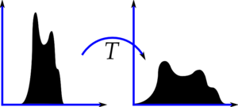
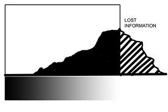
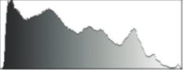
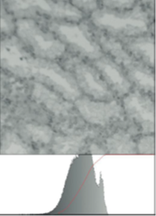
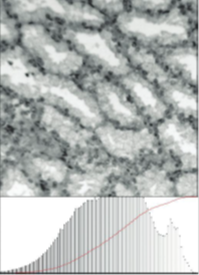
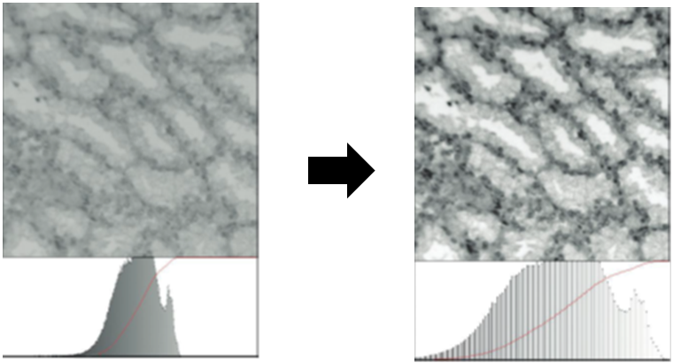
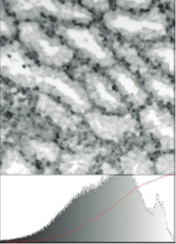
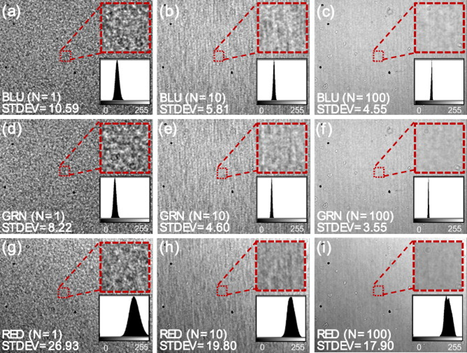
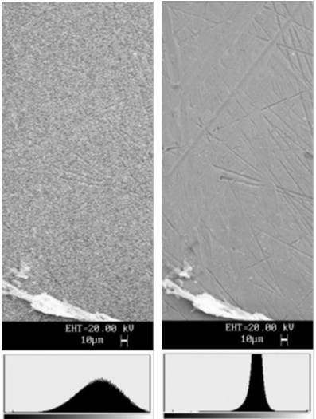

Some important aspects in image processing and 2D image analysis
Some important aspects in image processing and 2D image analysis
Image Processing: image in -> image out
Image Analysis: image in -> measurements out
Image Understanding: image in ->high-level description out
Modern digital technology has made it possible to manipulate multi-dimensional signals. The goal of this manipulation can
be divided into three categories:
Image Processing image in -> image out
Image Analysis image in -> measurements out
Image Understanding image in -> high-level description out
We will first focus on some fundamental concepts of image processing. Then some introduction on image analysis will be
given. Image understanding should be the aim of using different imaging techniques and requires a lot of expertise and
experience. In this chapter we will restrict ourselves to two–dimensional (2D) image processing and 2D image analysis,
although most of the concepts and techniques that are to be described can be extended easily to three dimensions (see
Chapter on X-ray CT and Morpho+).
Image processing
Image processing is used in a wide variety of applications, for two different purposes:
improving the visual appearance of images to a human observer, including their printing and transmission.
preparing images for the measurement of the features and structures which they reveal.
Image processing is used in a wide variety of applications, for two different purposes:
improving the visual appearance of images to a human observer, including their printing and transmission.
preparing images for the measurement of the features and structures which they reveal.
The techniques that are appropriate for each of these tasks are not always the same, but there is considerable overlap.
We will briefly discuss some aspects of image processing. For more detail we can refer to the book of John Russ “The imaging
processing handbook”.
Image processing
A first group of image processing operations:
procedures applied to correct defects in acquired images (due to imperfect detectors, limitations of optics, inadequate
or non-uniform illumination or an undesirable viewpoint).
are applied after image has been digitized and stored => are unable to deliver highest quality result that can be achieved
by optimizing/correcting the acquisition process in the first place. (of course not always possible to obtain a perfect
digital image in reality).
A first group of image processing operations are those procedures applied to correct some of the defects in acquired images
that may be present due to imperfect detectors, limitations of the optics, inadequate or non-uniform illumination or an
undesirable viewpoint. It is important to emphasize that these corrections are applied after the image has been digitized
and stored and therefore are unable to deliver the highest quality result that can be achieved by optimizing or correcting
the acquisition process in the first place. Of course, it is not always possible to obtain a perfect digital image in
reality.
What is contrast expansion?
figure a
figure b

figure a

figure b
Image processing: contrast expansion
digital images can be represented by: values from 0 (black) to 255 (white), producing one byte (8 bit) values, or for
colour images one byte each for red, green, and blue.
If camera has more precision, the values may have more bits of precision = full dynamic range of the camera
No reason that the actual image data must cover the full range.
In many situations: recorded image has a much smaller range of brightness values, which may either lie in middle of the
range (intermediate gray values) or toward either the bright or dark end of the range.
Contrast expansion
We have already seen that the typical digitization process for images produces values from 0 (black) to 255 (white), producing
one byte (8 bit) values, or for colour images one byte each for red, green, and blue. If the camera and digitizer have
more precision, the values may have 10, 12, or even more bits of precision and typically occupy two bytes each. But while
this is the full dynamic range available to the output of the camera sensors, there is no reason that the actual image
data must cover the full range. In many situations the recorded image has a much smaller range of brightness values, which
may either lie in the middle of the range (intermediate gray values) or toward either the bright or dark end of the range.
Image processing: contrast expansion
The image histogram, a plot of the number of pixels with each possible brightness level, is a valuable tool for examining
the contrast in the image.
The Histogram below covers the full dynamic range and indicates good contrast. There are no pixels that are completely
black or white.

The image histogram, a plot of the number of pixels with each possible brightness level, is a valuable tool for examining
the contrast in the image. Figure 16 shows an example image in which the histogram covers the full dynamic range and indicates
good contrast. There are no pixels that are completely black or white.
Image processing: contrast expansion
If range of variation in brightness of the image is much smaller than dynamic range of the camera and digitizer, then the
actual range of numbers is much less than the full range of 0 through 255, as seen below

If the inherent range of variation in brightness of the image is much smaller than the dynamic range of the camera, subsequent
electronics, and digitizer, then the actual range of numbers is much less than the full range of 0 through 255. Figure
17 shows such an example.
The specimen in Fig. 17 is a thin section through tissue, shown in a bright field microscope. Illumination in the microscope
and light staining of the section produce very little total contrast. The narrow peak and empty regions at the ends of
the histogram indicate that many of the possible brightness levels are not used.
Image processing: contrast expansion
linear expansion of brightness range
=> a full range of black to white values but gaps in histogram

. Visibility of the structures present can be improved by stretching the contrast so that the values of pixels are reassigned
to cover the entire available range. Figure 17b shows this.
Image processing: contrast expansion
mapping is linear and one-to-one
=> darkest pixels in original image are assigned to black, lightest pixels are assigned to white, and intermediate gray
values in original image are given new values (linearly interpolated between black and white)
The mapping is linear and one-to-one. This means that the darkest pixels in the original image are assigned to black, the
lightest pixels are assigned to white, and intermediate gray values in the original image are given new values which are
linearly interpolated between black and white.
Image processing: contrast expansion
All of the pixels which have the same gray value in the original image are assigned the same new gray value in the resulting
image.
Due to reassignment of gray values: ↑ visual contrast for the pixels present, but no increase in ability to discriminate
subtle variations in gray scale that are not recorded in original image.

fig. 17
All of the pixels which have one gray value in the original image are assigned the same new gray value in the resulting
image. This histogram plotted with the image in the figure now shows counts of pixels for gray levels that are spread
out across the available brightness scale. However, many of the gray values still show zero counts in the histogram, indicating
that no pixels have those values. The reassignment of gray values has increased the visual contrast for the pixels present,
but has not increased the ability to discriminate subtle variations in gray scale that are not recorded in the original
image. It has also magnified the brightness differences associated with noise in the original image.
Image processing: contrast expansion
Acquiring image with optimum illumination and camera exposure
=> produces a visually similar result as after contrast expansion but without gaps in the histogram.

Figure 17c shows the same field of view acquired utilizing the entire range of the camera and digitizer. This may require
adjusting the illumination, camera gain, or exposure time, etc., and may require trial and error in the settings, which
are simplified if a live histogram can be shown. The mean brightness of various structures is similar to that shown in
Figure 17b. However, all of the 256 possible gray values are now present in the image, and small variations in sample
density can now be distinguished
However, it is often not practical to adjust the illumination, camera gain, etc., to exactly fill the available pixel depth
(the number of gray levels that can be digitized or stored). Furthermore, increasing the brightness range too much can
cause pixel values at the dark and/or light ends of the range to exceed the digitization and storage capacity and to be
clipped to the limiting values, which also causes loss of information. Figure 18 shows an example, a night scene in which
the brightness scale of the face of the building is good but bright lights are brighter than the white limit of the camera
and consequently are clipped to the maximum value of 255, while the dark areas around the building are underexposed and
clipped to zero (black), losing any detail that might have been present.
FIGURE 18: A night scene in which the bright lights are clipped to white and the shadows are clipped to black. Information
lost due to clipping cannot be recovered.
Image processing: what about noisy images?
linear expansion of contrast often accompanied by increased visibility for noise that may be present.
Noise: important defect in images that can take many different forms and arise from various sources.
Noisy images
The linear expansion of contrast shown in the examples above is often accompanied by an increased visibility for noise
(random fluctuations in pixel values) that may be present. Noise is an important defect in images that can take many different
forms and arise from various sources.
What is the most important raison of noise in images?
A bad microscope configuration
The used illumination time
The used camera
How can we reduce noise in images?
By averaging the number of frames
By using longer exposure times
By image processing using filters
Other method?
Image processing: what about noisy images?
It is possible to improve in image quality (technically, signal to-noise ratio) by averaging a number of frames.
It is possible to improve in image quality (technically, signal to-noise ratio) by averaging a number of frames.

Kim et al. LED and CMOS image sensor based hemoglobin concentration measurement technique, Sensors and Actuators B: Chemical,
157(1), 2011, Pages 103-109.
Image processing: what about noisy images?
Sources of noise:
counting statistics in the image detector due to a small number of incident particles (photons, electrons, etc.).
due to instability in the light source or detector during the time required to scan or digitize an image.
However, one unavoidable source of noise is counting statistics in the image detector due to a small number of incident
particles (photons, electrons, etc.). Noisy images may also occur due to instability in the light source or detector during
the time required to scan or digitize an image. The pattern of this noise may be different from the essentially Gaussian
noise due to counting statistics, but it still shows up as a variation in brightness in uniform regions of the scene.
When the noise has a characteristic that is not random in time and does not exhibit “normal” statistical behaviour, it
is more difficult to place meaningful numeric descriptors on the amount of noise. However, many of the same techniques
can be used, usually with somewhat less efficacy, to reduce the noise.
Image processing: noisy images
Noise reduction by the use of frame averaging versus “staring” mode in camera.
Frame averaging: combining many sequential readouts from a camera
Staring mode: using a camera that can integrate the charge internally before it is read out. ( often used in astronomy,
fluorescence microscopy, and other applications with very faint images); the camera is open to the incident light.
Assuming that an image represents the best quality that can practically be obtained, we will focus on ways to suppress
noise to improve the ability to visualize and demarcate for measurement the features which are present. The underlying
assumptions in all of these methods are that the pixels in the image are much smaller than any of the important details,
and that for most of the pixels present, their neighbours represent the same structure. Various averaging and comparison
methods can be applied based on these assumptions.
There are important differences between noise reduction by the use of frame averaging to combine many sequential readouts
from a camera and the use of a camera that can integrate the charge internally before it is read out. The latter mode
is employed in astronomy, fluorescence microscopy, and other applications with very faint images and is sometimes called
“staring” mode since the camera is open to the incident light.
Image processing: noisy images

SEM images of a scratched metal surface: (a) 1 second scan and histogram;(b) 20 second scan and histogram.
Image processing: noisy images
The fast scan image: collects few electrons per pixel; has a high random noise level that obscures details in the image.
Slowing the scan rate down from 1 s to 20 s increases amount of signal and reduces the noise.
The histograms show that the variation of brightness within the uniform region is reduced (the peak is narrowed), which
is why the visibility of detail is improved.
(Fig. 19)
Figure 19 shows a comparison of two SEM images taken at different scan rates. The fast scan image collects few electrons
per pixel and so has a high random noise level that obscures details in the image. Slowing the scan rate down from 1 second
to 20 seconds increases the amount of signal and reduces the noise. The histograms show that the variation of brightness
within the uniform region is reduced (the peak is narrowed), which is why the visibility of detail is improved.
Many digital cameras allow setting an equivalent ASA rating, corresponding to film sensitivity. The higher the ASA rating
the shorter the exposure and/or the smaller the aperture used to capture the image. This requires a higher gain in the
amplification of the signal, producing a higher level of random noise. Figure 20 shows the reduction of noise and improvement
in image quality with longer exposure time (achieved by reducing the ASA setting on the camera from 1600 to 100). The
noisy image in Figure 20a is also the starting point for various noise reduction methods shown below.
Figure 20: Noise reduction by collecting more signal: (a) image recorded at ASA 1600 setting, 1/800 second exposure; (b)
same image recorded at ASA 100 setting, 1/50 second exposure.
Image processing: noisy images
Besides frame averiging and longer exposure times
also image processing possible!
Image processing: noisy images
We assume: the image represents the best quality that can be obtained. Underlying assumptions in all of the next methods
are:
the pixels are much smaller than any of the important details
for most of the pixels present, their neighbours represent the same structure.
based on these assumptions, various averaging and comparison methods can be applied
Image processing: noisy images
neighbourhood averaging: simplest form of spatial averaging: to add together the pixel brightness values
in each small region of the image, divide by the number of pixels in the neighbourhood, and use the resulting value to
construct a new image.
Neighbourhood averaging
The simplest form of spatial averaging is to add together the pixel brightness values in each small region of the image,
divide by the number of pixels in the neighbourhood, and use the resulting value to construct a new image.
Image processing: noisy images
neighbourhood averaging:
=> produces an image with a smaller number of pixels. (block size is 3×3 => 9 pixel values are added)
=> improvement in image quality or signal-to-noise ratio due to random noise is the square root of 9, or a factor of 3.
(fig. 21a)
Figure 21a shows that this essentially produces an image with a smaller number of pixels. The block size is 3 × 3, so that
nine pixel values are added. For the random noise in this image, the improvement in image quality or signal-to-noise ratio
is the square root of 9, or a factor of 3.
Image processing: noisy images
But: lateral resolution is seriously impacted and the small structures in the image can no longer be separated.
However, the image lateral resolution is seriously impacted and the small structures in the image can no longer be separately
discerned.
Image processing: noisy images
The more common way to accomplish neighbourhood averaging is to replace each pixel with the average of itself and its neighbours
=> = a “kernel” operation or a convolution
The more common way to accomplish neighbourhood averaging is to replace each pixel with the average of itself and its neighbours.
This is often described as a “kernel” operation, since implementation can be generalized as the sum of the pixel values
in the region multiplied by a set of integer weights. The process is also called a convolution.
Image processing: noisy images
Neighbourhood operations: usually applied symmetrically around each pixel
=> problem for pixels nearer to an image edge than the half-width of the neighbourhood.
Neighbourhood operations, including kernel multiplication, are usually applied symmetrically around each pixel. This creates
a problem for pixels nearer to an edge of the image than the half-width of the neighbourhood.
Image processing: noisy images
Various approaches possible:
special asymmetrical kernels or rules along edges or in corners, assuming that image edges are mirrors so that each line
of pixels within the image is duplicated beyond it
extrapolating values from within image area to pixels beyond edge
Various approaches are used to deal with this problem, including designing special asymmetrical kernels or rules along
edges or in corners, assuming that the image edges are mirrors so that each line of pixels within the image is duplicated
beyond it, extrapolating values from within the image area to the pixels beyond the edge, or assuming that the image wraps
around so that the left edge and right edge, and the top and bottom edges, are continuous.
Image processing: noisy images
Various approaches possible:
assuming that the image wraps around so that left edge and right edge, and top and bottom edges, are continuous.
processing is restricted to that portion of image where no edge conflicts arise => leaves lines of unprocessed pixels
along edges of images, equal in width to radius of neighbourhood.
None of these approaches is entirely satisfactory; in general most processing operations sacrifice some info from image
borders.
An even simpler approach is sometimes used: the processing is restricted to that portion of the image where no edge conflicts
arise. This leaves lines of unprocessed pixels along the edges of the images, equal in width to the radius of the neighbourhood.
None of these approaches is entirely satisfactory, and in general most processing operations sacrifice some information
from the image borders.
Image processing: noisy images
To reduce noise:
Smoothing filters discussed before:
okay when pixels all belong to same structure or object
not true at edges and boundaries
=> these filters produce blurring and shifting of edges
Neighbourhood ranking
Smoothing filters do reduce random noise, but the underlying assumption is that all of the pixels in the neighbourhood
represent multiple samples of the same value, in other words that they all belong to the same structure or object. Clearly,
at edges and boundaries this is not true, and all of the smoothing filters shown above produce some blurring and shifting
of edges, which is undesirable.
Image processing: noisy images
To reduce noise:
The use of weighting kernels to average together pixels in a neighbourhood (convolution):
: a linear operation that uses all of the pixels in the neighbourhood
no information is lost from the original image
Other processing operations that can be performed in neighbourhoods that also provide noise reduction:
Neighbourhood ranking
The use of weighting kernels to average together pixels in a neighbourhood is a convolution operation. It is a linear operation
that uses all of the pixels in the neighbourhood, and in which no information is lost from the original image. There are
other processing operations that can be performed in neighbourhoods in the spatial domain that also provide noise reduction.
These are not linear and do not utilize or preserve all of the original data.
Image processing: noisy images
Neighbourhood ranking:
not linear and do not utilize or preserve all of the original data.
most widely used: based on ranking of the pixels in a neighbourhood according to brightness, a median value is used as
new value for central pixel.
median filter: excellent rejecter of certain common kinds of noise. If a pixel contains an extreme value, it is replaced
by a “reasonable” value, the median value in the neighbourhood.
The most widely used of these methods is based on ranking of the pixels in a neighbourhood according to brightness. Then
the median value in this ordered list can be used as the new value for the central pixel. As in the case of the kernel
operations, this is used to produce a new image and only the original pixel values are used in the ranking for the neighborhood
around each pixel.
The median filter is an excellent rejecter of certain common kinds of noise, both random superimposed variations and “shot”
or impulse noise in which individual pixels are corrupted or missing from the image. If a pixel contains an extreme value,
it is replaced by a “reasonable” value, the median value in the neighborhood. This type of noise occurs in CMOS cameras
with “dead” transistors that have no output or “locked” ones that always put out maximum signals, and in interference
microscopes for points on a surface with a locally high slope that return no light, for example. Dust on scanned film
negatives also creates this image defect.
The median filter replaces the center value in the window with the median of all the pixel values in the window. In the
case below, we want to know the value after median filtering of a single 3x3 window of values.
16
8
4
unfiltered valuesmedian filtered
The median filter replaces the center value in the window with the median of all the pixel values in the window. In the
case below, we want to know the value after median filtering of a single 3x3 window of values.
unfiltered valuesmedian filtered
in order: 0, 2, 3, 3,
4, 6, 10, 15, 97
The mean filter is a spatial filter that replaces the center value in the window with the mean of all the pixel values
in the window. In het case below, we want to know the value after a mean filtering of a single 3x3 window of values below.
4
5
6
unfiltered valuesmean filtered
The mean filter is a spatial filter that replaces the center value in the window with the mean of all the pixel values
in the window. In het case below, we want to know the value after a mean filtering of a single 3x3 window of values below.
unfiltered valuesmean filtered
5 + 3 + 6 + 2 + 1 + 9 + 8 + 4 + 7 = 45
45 / 9 = 5
Image processing: noisy images
Neighbourhood ranking median filter
originalfiltered
Application of median filtering using a 3×3 square region
Figure 22 shows an extreme example of this type of noise. Ten percent of the pixels in the original image, selected randomly,
are set to black, and another ten percent to white. A median filter is able to remove the noise and replace the bad pixels
with reasonable values while causing a minimal distortion or degradation of the image. Two different neighbourhoods are
used: a 3 × 3 square containing a total of 9 pixels, and a 5 × 5 octagonal (approximately circular) region containing
a total of 21 pixels.
Image processing: noisy images
Neighbourhood ranking median filter
originalfiltered
Application of median filtering using a 5×5 octagonal region
Image processing: noisy images
Neighbourhood ranking median filter: the time required rises quickly with the number of values to be
sorted
Neighbourhood patterns used for median filtering: (a) 4 nearest-neighbour cross; (b) 3×3 square containing 9 pixels; (c)
5×5 octagonal region with 21 pixels; (d) 5×5 square containing 25 pixels; (e) 7×7 octagonal region containing 37 pixels.
Neighbourhood ranking : other filters: mode filters and many more.
Figure 23 shows several of the neighbourhood regions often used for ranking. The time required rises quickly with the number
of values to be sorted, even using specialized methods which keep partial sets of the pixels ranked separately so that
as the neighbourhood is moved across the image, only a few additional pixel comparisons are needed (Weiss, 2006). Square
neighborhoods are more easily implemented than ones that approximate a circle, but particularly as the size of the neighbourhood
is increased the use of a circular pattern is important for producing isotropic results.
Other noise reduction filters exist, like a mode filter (Davies, 1988), the hybrid median, or corner-preserving median
(Nieminen et al., 1987). During practice the influence of different filters will be tested.
Image processing: noisy images
To reduce noise:
Contrast manipulation:
Expanding contrast range by assigning the darkest pixel value to black, the brightest value to white, and each of the
others to linearly interpolated shades of gray (makes good use of the display and enhances the visibility of features
in the image).
one-to-one relationship
Contrast manipulation
Expanding the contrast range by assigning the darkest pixel value to black, the brightest value to white, and each of the
others to linearly interpolated shades of gray makes good use of the display and enhances the visibility of features in
the image.
A typical computer display can show 28 or 256 different shades of gray and can produce colours with the same 28 brightness
values for each of the red, green, and blue components to produce a total of 224 or 16 million different colours. This
is often described as “true colour,” since the colours that can be displayed are adequate to represent most natural scenes.
It does not imply, of course, that the colours displayed are photometrically accurate or identical to the original colour
in the scene, or that the display is capable of showing the full gamut of colours that the eye can perceive or the camera
capture. That is very difficult and requires special hardware and calibration. If the original image has more than 256
brightness values (is more than 8 bits deep) in each colour channel, some type of lookup table is required even to display
it on the screen. More important, the 16 million different colours that such a system is capable of displaying, and even
the 256 shades of gray, provide a finer gradation than the human eye can distinguish. Under good viewing conditions, humans
can typically distinguish only a few tens of different gray levels and a few hundreds of distinguishable colours. Consequently,
the display hardware of the image processing system is not being used very well to communicate the image information to
the user. If many of the pixels in the image are bright, for example, they cannot be distinguished. If there are also
some dark pixels present, it is not possible to just linearly expand the contrast. Instead, a more complicated relationship
between stored and displayed values is needed.
Image processing: noisy images
To reduce noise:
Contrast manipulation:
in some cases, it is advantageous /necessary to use transfer functions that are not one-to-one: several stored values
are displayed with the same brightness value, so that other stored values can be spread further apart to increase their
visual difference.
A nonlinear relationship can expand one portion of the gray scale range while compressing another.
The manipulation of pixel brightness can be described in terms of a transfer function relating the stored brightness value
for each pixel to a displayed value. If this relationship is one-to-one, then for each stored value there is be a corresponding
and unique (although not necessarily visually discernible) displayed value. In some cases, it is advantageous or necessary
to use transfer functions that are not one-to-one: several stored values are displayed with the same brightness value,
so that other stored values can be spread further apart to increase their visual difference. A nonlinear relationship
can expand one portion of the gray scale range while compressing another.
Image processing: noisy images
To reduce noise:
Also other methods to remove defects: maximum entropy, maximum likelihood, nonuniform illumination, to perform the fitting
of a background function, to perform alignment, to perform edge enhancement, etc…. Check Russ, Image J and literature
for more info.
Additionally, there also exist image processing methods to remove defects, maximum entropy, maximum likelihood, nonuniform
illumination, to perform the fitting of a background function, to perform alignment, to perform edge enhancement, etc….
More information can be found in the Image processing handbook of Russ and in the help function of ImageJ, which will
be used for image processing and 2D image analysis during practice.
Image processing
After preparing images for analysis
selection of objects within an image which need to be analysed
=> THRESHOLDING/SEGMENTATION
After preparing the images for analysis the next step is the selection of the objects or features within an image which
need to be analysed.
Image processing
Thresholding:
define a range of brightness values in the original image
select the pixels within this range as belonging to the foreground
reject all the other pixels to the background
=> binary image using black and white to distinguish the regions
Traditionally, a simple way to accomplish this is to define a range of brightness values in the original image, select
the pixels within this range as belonging to the foreground, and reject all the other pixels to the background. Such an
image is then usually displayed as a binary image using black and white to distinguish the regions (fig. 24b). This process
is called thresholding and is used to separate the phase or material of interest from the rest of the volume.
Image processing
Thresholding:
Image processing
Many thresholding methods exist on the basis of:
grey-level
colour separation
textural differences
other meaningful criteria
Many thresholding methods exist on the basis of gray-level, colour separation, textural differences, or other meaningful
criteria.
Image processing
single thresholding
Many thresholding methods exist. With a single threshold, all values within a certain grayscale interval are converted
into foreground pixels. This interval can be manually selected or calculated automatically by using Otsu’s method (Otsu,
1979).
Image processing
dual thresholding
region growing
Image processing
dual thresholding
region growing
Dual thresholding uses two intervals; pixels with a gray value in the first interval are classified as foreground pixels,
while pixels in the second interval are only defined as foreground pixels if they are connected to pixels from the first
interval. This approach reduces the sensitivity to residual image noise. It is not always necessary to threshold the image
in order to make measurements such as determining the area fraction of each structure. Histogram analysis may be done
by fitting Gaussian (or other shape) functions to the histogram.
Like described before, are manual adjustment of thresholds to produce a result that is considered to be correct based on
visual inspection by a human operator common, but in most cases this should be avoided. In addition to taking time and
being incompatible with automatic processing, different results are likely to be obtained at different times or by different
people. Therefore, manual thresholding errors are probably responsible for more problems in subsequent image analysis
than any other cause.
A number of algorithms have been developed for automating the thresholding procedure. Some of them, primarily used in machine
vision setups for industrial quality control, are more concerned with reproducibility than with absolute accuracy. Most
of the automatic methods utilize the histogram in their calculations, but some also make use of the location information
for the pixels (and their neighbours). All automatic methods make some assumptions about the nature of the image, and
in order to choose the proper algorithm it is important to know as much as possible about the nature of the image, how
it was acquired, and what kinds of scenes or subjects are dealt with. An excellent summary of the more widely used methods
can be found in Parker (1997), Yager (1979), Otsu (1979), Trussell (1979), and a comprehensive survey of all techniques
is available in Sezgin & Sankur (2004).
Image processing
Thresholds in manual and semi-automatic methods are set by the operator interactively so that the resulting image is visually
satisfying => not always consistent results
Automatic methods
Thresholds in manual and semi-automatic methods are set by the operator interactively, so that the resulting image is visually
satisfying. However, because the human eye is poor in intensity discrimination, the result is not always consistent from
one operator to another or even for the same person over a period of time. Other methods use the image intensity histogram
to adjust threshold settings automatically and give more reproducible results. In addition, depending on their quality,
images are regularly subjected to some filtering before segmentation and correction procedures (including binary operations
like opening and closing, and methods like watershed separation) (fig. 24b, c) are often applied to segmented images (Bovik
et al., 2001; Russ, 2002).
Image processing
After thresholding, pixels that are erroneously classified as foreground voxels due to noise can be removed by noise reduction,
described before or by applying several
binary operations:
Removal of isolated foreground or background voxels (pixels are isolated if they are not connected to a voxel of the same
binary value)
Eroding
Dilating
Opening
Closing
Hole filling
After thresholding, pixels that are erroneously classified as foreground voxels due to noise can be removed by applying
several binary operations: removal of isolated foreground or background voxels (pixels are isolated if they are not connected
to a voxel of the same binary value), eroding, dilating, opening, closing, and hole filling (Soille, 1999). For more info
read literature on “processing binary image”.
Processing a binary image
AND, OR, XOR, NOT
(fig. 25) Simple Boolean operations: (a) binary image A; (b) binary image B; (c) A AND B; (d) A OR B; (e) A Ex- OR B;
(f) NOT A. (Ex-OR turns a pixel ON in the result if it is ON in either of the original images, but not if it is ON in
both).
Processing a binary image
After thresholding, a binary image is created, but often this image is not perfect for the aimed analysis of the features
in the image, since often some pixels are misclassified as foreground or background. The major tools for working with
binary images to correct the thresholding errors fit broadly into two groups: Boolean operations for combining images
and morphological operations that modify individual images within an image. It is of course also possible to combine Boolean
operations.
The four principal possibilities of Boolean operations are AND, OR, Ex-OR (Exclusive OR, often abbreviated as XOR) and
NOT. Figure 25 illustrates each of these basic operations, which will be tested during practice.
Processing a binary image. What is the correct result?
0, 0, 0, 0
1, 0, 0, 1
0, 1, 1, 0
1, 1, 1, 1
Processing a binary image
Processing a binary image
What are morphological procedures?
Processing a binary image
The most widely used processing operations for binary images are often collectively described as morphological procedures.
These include erosion and dilation, and modifications and combinations of these operations.
The most widely used processing operations for binary images are often collectively described as morphological procedures
(Serra, 1982; Coster & Chermant, 1985; Dougherty & Astola, 1994, 1999; Soille, 1999; Shih, 2009). These include erosion
and dilation, and modifications and combinations of these operations.
Processing a binary image
An erosion operation can replace each pixel value with the minimum of its own value and the value of its neighbours; dilation
does the same but with the maximum value.
An erosion operation can replace each pixel value with the minimum of its own value and the value of its neighbours; dilation
does the same but with the maximum value.
Processing a binary image
Different erosion methods exist. The simplest kind of erosion is to remove (set to OFF, shown in the examples here as white
background) any pixel touching another pixel that is part of the background (is already OFF). This removes a layer of
pixels from around the periphery of all features and regions.
Processing a binary image
Effect of erosion using a 3×3 square structuring element
Processing a binary image
Dilation: Below a structural element used to dilate corresponding brown stained regions is 3 × 3 used.
Effect of dilation using a 3×3 square structuring element (Mutlu et al., 2009. BMC Bioinformatics 10(11)).
Processing a binary image
The classical dilation rule is to add (set to ON, shown in the examples here as black) any background pixel which touches
another pixel that is already part of a foreground region (is already ON)
Processing a binary image
This adds a layer of pixels around the periphery of all features and regions, which causes an increase in some dimensions.
It also fills in small holes within features.
Processing a binary image
An opening operation subsequently performs an erosion and a dilation operation
A closing operation subsequently performs first the dilation and then the erosion operation.
(fig. 26)
An opening operation subsequently performs an erosion and a dilation operation (fig. 26). In the case of a closing operation,
first the dilation and then the erosion operation are executed (fig. 26). As a result of an opening operation, all sets
of foreground pixels for which the smallest dimension is smaller than a certain chosen value are removed. The same will
happen for sets of background pixels after a closing operation.
Which morphological operation was used in this image?
Erosion
Dilation
Opening
Closing
Which morphological operation was used in this image?
Dilation: add (set to ON, shown in the examples here as black) any background pixel (white, off) which touches another
pixel that is already part of a foreground region (is already ON).
Which morphological operation was used in this image?
Erosion
Dilation
Opening
Closing
Which morphological operation was used in this image?
Erosion: to remove (set to OFF, shown in the examples here as white background) any pixel touching another pixel that is
part of the background (is already OFF).
Which morphological operation was used in the following images?
A) Opening, B) Closing
A) Closing, B) Opening
A) Dilation, B) Erosion
A) Erosion, B) Dilation
Figure AFigure B
Which morphological operation was used in this image?
DilationErosion
A) Closing (dilation, erosion), B) Opening (erosion, dilation)
Figure AFigure B
Processing a binary image
“Filling holes” turns background pixels completely enclosed by foreground pixels into foreground pixels.
“Filling holes” turns background pixels completely enclosed by foreground pixels into foreground pixels. All these binary
operations will be tested during practice.
2D image analysis
2D image analysis
Important facts when performing 2D IA:
it is important to collect many images from multiple fields of view, spread throughout the specimen in a randomized and
unbiased way.
one has to keep in mind that we are dealing with 2D intersects of a 3D volume.
(fig. 27)
Many published papers in all fields of science, particularly ones that use microscopy, include images with the caption
“representative microstructure” or “typical structure,” and in no case is this likely to be true. Either the particular
image selected has been chosen because it shows most clearly some feature of the structure that the author believes is
important, or it displays the best qualities of specimen preparation and image contrast, or some other characteristic
that makes it (almost by definition) non-typical. In most real structures, there is no such thing as one typical field
of view in a true statistical sense. That is why it is important to collect many images from multiple fields of view,
spread throughout the specimen in a randomized and unbiased way.
When performing digital analysis on 2D thin sections, one has to keep in mind that we are dealing with 2D intersects of
a 3D volume. As shown in Figure 27, a section plane that intersects a volume shows an area, while an intersection with
a surface generates a line, and an intersection with a linear structure presents a point.
2D image analysis
Important facts when performing 2D IA:
By measuring and counting 2D features, raw data is provided that are interpreted to provide estimates of the 3D structures
themselves. One method to this, is called stereology.
It is primarily a geometrical and statistical science.
By measuring and counting these “events”, the provided raw data needs to be interpreted to deliver estimates of the three-dimensional
structures themselves. One method to this, is called “stereology”. The science of stereology relates the measurements
that can be performed on two-dimensional images to the three-dimensional structures that are represented and sampled by
those images. It is primarily a geometrical and statistical science, whose most widely used rules and calculations have
a deceptive simplicity. Guides to modern stereological methods can be found in Russ & Dehoff (2001), Mouton (2002), Mandarim-de-Lacerda
(2003), Glaser et al. (2007), while classical methods are described in Underwood (1970), Weibel (1979), Russ (1986), Hilliard
& Lawson (2003), Schneider & Weil (2008). The key to understanding stereological measurements is the relationship between
a three-dimensional structure and a two-dimensional section through it, as used in many types of microscopy for examining
materials and biological specimens.
2D image analysis
By 2D IA on single features many parameters can be determined:
Counting the number of objects that are present in an image or field of view.
Determining the size of objects
Determining the shape of objects
2D image analysis
Counting the number of objects that are present in an image or field of view.
one of the most common procedures in IA
concept seems entirely straightforward, but often wrongly performed.
Problem: the finite bounds of the FOV.
When performing 2D image analysis on single features in an image, many parameters can be determined. Counting the number
of objects or features that are present in an image or field of view is one of the most common procedures in image analysis.
The concept seems entirely straightforward, and it is surprising how many programs get it wrong. The problem has to do
with the finite bounds of the field of view.
2D image analysis
Counting the number of objects:
When FOV is a sample of entire structure, which extends beyond the bounds of the image: result for the number of objects
is generally given as number per unit area.
In the case in which the entire field of interest is within the image, there is little difficulty. Determining whether
or not it is appropriate to count features that lie inside other features depends on the particular application, and consequently
must be left up to the user.
When the field of view is a sample of the entire structure, which extends beyond the bounds of the image, the result for
the number of features or objects is generally given as number per unit area.
2D image analysis
Counting the number of objects:
When objects intersect the edge of FOV, it is not proper to count all of those objects that can be seen
=> solution: count those features that touch 2 adjacent edges, f.i. top and left, and ignore those that touch other 2 edges,
f.i. right and bottom
=> area reported for the measurement is the area within the counting frame, not the entire area of the image!
When features intersect the edge of the field of view, it is not proper to count all of the features that can be seen.
The most common solution to produce an unbiased result is to count those features that touch two adjacent edges, for instance
the top and left, and to ignore those that touch the other two edges, for instance the right and bottom.
This is equivalent to counting each feature by its lower right corner. Since each feature has one and only one lower right
corner, counting those points is equivalent to counting the features. The convention of counting features that touch two
edges only is not implemented in all systems.
Some software packages offer a choice of counting all features regardless of edge touching, or counting only those features
that do not touch any edge. Both are incorrect. When measuring objects, as opposed to counting them, a more complicated
procedure is needed. A feature that intersects any edge cannot be measured, because it is not all imaged and therefore
no size, shape, or position information can be correctly obtained. If only the features in Figure 28 that do not touch
any edge are counted, the proportions of large and small features are wrong. It is more likely for a large object to touch
an edge, and so a disproportionate fraction of the large features intersect an edge of the field of view and are not measured.
There are two ways to correct for this bias. They produce the same result, but are implemented differently.
2D image analysis
Counting the number of objects: (also allows to measure their area)
(fig. 29)
The older method, which was used originally for manual measurements on photographic prints, sets up a “guard frame” within
the image, as shown in Figure 29. Features that touch the lower and right edges of the field of view are not counted or
measured, as before. Features that cross the top and left edges of the guard frame are counted and measured in their entirety.
The number of features or objects counted is then an accurate and unbiased measure of the number per unit area, but the
area reported for the measurement is the area within the counting frame, not the entire area of the image. This is exactly
equivalent to the “lower right corner” method shown above for counting, but also permits measurements to be made on the
objects. Since it is necessary for the guard region to be wide enough that no feature can extend from within the active
region across the guard region to the edge of the field, the active region may be reduced significantly compared to the
total image area.
2D image analysis
Second method to determine area of objects:
use entire image area and measures all of those features that do not touch any of the edges.
To compensate for bias (larger features are more likely to touch the edge) features are counted in proportion to the likelihood
that a feature of that particular size and shape would be likely to touch the edge of a randomly placed field of view.
The second method uses the entire image area and measures all of those features that do not touch any of the edges. In
order to compensate for the bias arising from the fact that larger features are more likely to touch the edge and be bypassed
in the measurement process, features are counted in proportion to the likelihood that a feature of that particular size
and shape would be likely to touch the edge of a randomly placed field of view.
2D image analysis
The adjusted count for each feature is calculated as follows:
Count = (Wx.Wy) / ((Wx-Fx).(Wy-Fy))
Wx and Wy: dimensions of image in x and y directions
Fx and Fy are maximum projected dimensions of the feature in those directions
(fig. 30)
The adjusted count for each feature is calculated, as shown in Figure 30, as:
Equation A:
Count==(Wx.Wy)/((Wx-Fx ).(Wy-Fy ) )
where Wx and Wy are the dimensions of the image in the x and y directions, and Fx and Fy are the maximum projected dimensions
of the feature in those directions. The F values are the same bounding-box coordinates used for finding a feature’s location.
When the feature dimensions are small compared to the dimensions of the field of view, the fraction is nearly 1.0 and
counting is little affected. When the feature extends across a larger fraction of the field of view in either direction,
it is more likely that a random placement of the field of view on the sample would cause it to intersect an edge; thus
the features that can be measured must be counted as more than one to correct for those that have been eliminated. The
adjusted count factor makes that compensation.
2D image analysis
Aim/problem: count features that are touching each other
2D image analysis
Aim/problem: count features that are touching each other
short-cut method: make Euclidean distance map (EDM)= distance transform = a derived representation of a digital image.
The map labels each pixel of the image with the distance to the nearest obstacle pixel (often a boundary pixel in a binary
image).
If the purpose of the processing and segmentation is to count features that are touching each other, like in Figure 31A,
there is a short-cut method that saves much of the computation. By making an Euclidean distance map (EDM), where every
local maximum point (pixels equal to or greater than all eight of their neighbours) is a unique point that represents
one feature, these features can be separated by a watershed segmentation.
2D image analysis
Aim/problem: count features that are touching each other
short-cut method: make Euclidean distance map (EDM) and use watershed segmentation
binary image of touching circlesEuclidean distance map (colour indicates distance of pixel from nearest background point)the watershed separation result
2D image analysis
Watershed separation:
this method can be explained by a metaphor based on the behaviour of water in a landscape.
When it rains, drops of water falling in different regions will follow the landscape downhill. The water will end up at
the bottom of valleys. Each valley is associated with a catchments basin, and each point in the landscape belongs to
exactly one unique basin.
2D image analysis
Watershed separation:
2D image analysis
Watershed separation:
2D image analysis
The most basic measure of the size of objects = the area.
For a pixel-based representation: = counting the number of pixels within the feature.
The size of an object in a 2D image may be related to the size of the corresponding object in 3D space in various ways,
depending on how the image is obtained.
The most basic measure of the size of objects in images is simply the area. For a pixel-based representation, this is the
number of pixels within the feature, which is determined by counting.
The size of an object in a two-dimensional image may be related to the size of the corresponding object in three-dimensional
space in various ways, depending on how the image is obtained.
The most common type of images are projections, in which the features show the outer dimensions of the objects, or planar
sections, in which the features are slices across the objects. In the latter case, it is possible to estimate the volume
of the objects using stereological methods.
2D image analysis
Below an image of spherical particles dispersed on a flat substrate.
The diameters can be measured (when enough pixels in each feature are present to give a precise measure of its size)
(fig. 32)
Figure 32 shows an image of spherical particles dispersed on a flat substrate. The diameters can be measured straightforwardly
from such an image subject to the usual restriction that there must be enough pixels in each feature to give a precise
measure of its size.
2D image analysis
Particles cover a large size range
smallest features are only one or a few pixels in size and are not well defined
A high resolution camera or the combination of multiple images is needed to image both the large and small features at
the same time.
When the particles cover a large size range, as they do in this image, this creates a problem. The smallest features are
only one or a few pixels in size and are not well defined (in fact, some may not even be thresholded). A high resolution
camera or the combination of multiple images is needed to image both the large and small features at the same time.
2D image analysis
Multiple sets of data taken at several magnifications are required.
When measurements are made at different magnifications, the proper procedure for combining them is on a per-unit-area basis.
Just measuring the same number of pictures at each magnification produces an incorrect result because, at the higher magnification,
a much smaller area is covered.
Even the high resolution digital camera does not provide enough pixels to accurately measure the smallest particles in
this case. One solution is to increase the optical magnification to enlarge the small particles, but then the large ones
are likely to intersect the edges of the screen so that they cannot be measured. Multiple sets of data taken at several
magnifications are required. When measurements are made at different magnifications, the proper procedure for combining
them is on a per-unit-area basis. Just measuring the same number of pictures at each magnification produces an incorrect
result because, at the higher magnification, a much smaller area is covered.
2D image analysis
Three possible measures for feature area: (a) net (8529 pixels); (b) filled (9376 pixels); (c) convex (11227 pixels).
Once the area has been determined, it is often convenient to express it as the equivalent circular diameter. This is a
linear size measure, calculated from the area as:
√(area.4/π)
Even for such a simple idea as counting pixels to determine feature area, some decisions must be made. For instance, consider
the feature shown diagrammatically in Figure 33. Should the pixels within internal holes be included in the area or not?
Of course, this depends on the intended use of the data. If the hole is a section through an internal void in an object,
then it should be included if the area of the feature is to be related to the object volume, but not if the area is to
be related to the object mass. But it is hard to know whether the hole may be a section through a surface indentation
in that object, in which case it would be more consistent to also include in the area those pixels in indentations around
the feature boundary. As shown in the figure, this produces three different possible area measurements, the net area,
the filled area, and the convex area. Measuring the first two can be accomplished as a simple pixel-counting exercise.
In the process of labeling the pixels that touch each other and comprise the feature, the presence of internal holes can
be detected and the pixels within them counted. These pixels can be added back to the original image to fill in the holes,
if desired. Determining whether to include those pixels in the area then becomes a user decision based on other knowledge.
Determining the convex area is a slightly more difficult calculation. In some cases, a combination of dilation and erosion
steps can be used to construct a convex hull for the feature and fill any boundary irregularities, so that pixel counting
can be used to determine the area. However, on a square pixel grid these methods can cause some distortions of the feature
shape.
2D image analysis
(fig. 34) Comparison of the bounding polygon (red), the longest chord (yellow), and equivalent area circle for an irregular
feature.
Figure 34 shows several features of different sizes and shapes with the equivalent circle diameter shown based on the net
feature area (pixel count). Features of different shape or orientation can fool the eye and make it difficult to judge
relative size. The equivalent diameter values offer an easily compared parameter to characterize size.
2D image analysis
an irregular feature with several measures of size:
original binary feature with its convex hull (orange)
2D image analysis
an irregular feature with several measures of size:
minimum circumscribed circle (red), maximum inscribed circle (green), maximum inscribed circle ignoring internal voids
(blue)
2D image analysis
an irregular feature with several measures of size:
minimum (magenta) and maximum (green) caliper dimensions (note that they are not perpendicular) (caliper = distance between
two opposite sides of an object)
2D image analysis
an irregular feature with several measures of size:
equivalent area circles for the net area (green), filled area (red), and convex hull (blue), each one positioned on the
centroid of the corresponding area
2D image analysis
Circles are often used to represent size, because the diameter provides a convenient linear measure that ignores any details
of shape. Besides the equivalent circle with the same area as the feature, the inscribed or circumscribed circle may be
used (Figure 35). The circumscribed circle is determined by using the corners of the bounding polygon, sorting through
them to find the two or three that define the circle that encloses all of the others (a concise algorithm for finding
the circle can be found in Arvo, 1991). The inscribed circle is defined by the maximum value of the Euclidean distance
map of the feature; the maximum pixel marks the center and its value gives the radius.
Since most real features have irregular shapes, it is not easy to find size measures that compactly and robustly describe
them and allow for their classification and comparison. The use of an equivalent circular diameter is one attempt. Recognizing
that not all features are equiaxed or evenly approximately round, an ellipse may also be used to represent the feature.
The fact that the ellipse has two axes allows describing a size, a degree of departure from circularity, and even an orientation
that can be useful in some applications. The major and minor axes of the ellipse may be determined in several different
ways, however.
2D image analysis
representative shape descriptors
(fig. 36)
Other parameters can be determined including the maximum caliper or maximum Feret’s diameter, an object’s length, the perimeter,
as well as trying to describe the shape. Figure 36 represents some shape factors, while Figure 37 and 38 illustrate how
an object can look like with similar or different formfactors.
2D image analysis
Represntative shape descriptors
Form factor:
(fig. 37) The shapes have the same area, but the increasing perimeter changes the measured formfactor.(fig. 38) shapes with an equal formfactor
Figure 36 represents some shape factors, while Figure 37 and 38 illustrate how an object can look like with similar or
different formfactors.